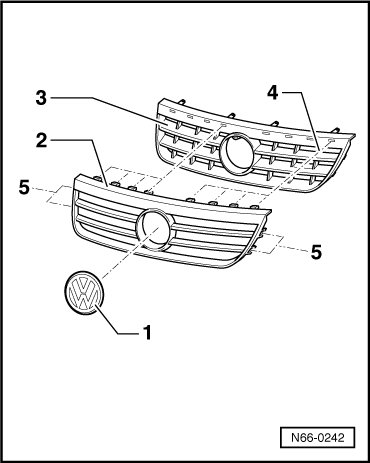

Chrome Grille, Through 10.2006
Radiator Grille
Chrome Grille, through 10.2006
Removing
- Remove radiator grille. Refer to --> [ Radiator Grille, through 10.2006 ]. Radiator Grille, Through 10.2006

- The chrome grille - 2 - is attached to radiator grille - 3 - with locking tabs - 4 - at top and locking tabs - 5 - at sides. Release them using a plastic wedge.
- Pull off chrome grille - 2 - from radiator grille - 3 -.
Installing
To install, perform the steps used for removal in reverse order.
• Make sure all the hooks audibly engage when installing the chrome grille.